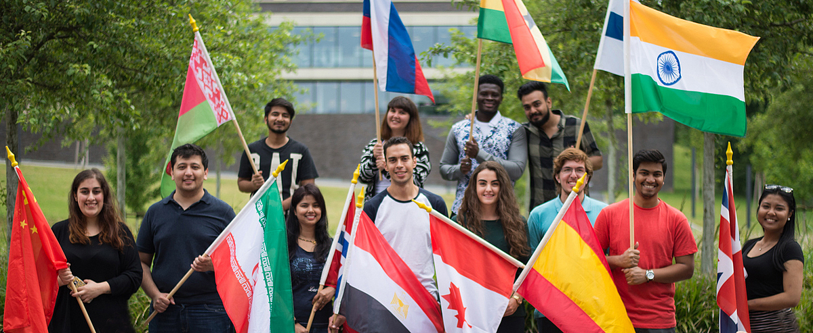

About US
Mittweida University of Applied Sciences offers its almost 7,000 students more than 50 degree programs of international standard. Students can complete their Bachelor, Master or Diploma degrees at the 5 faculties. The acknowledged study programs provide scientific skills and expertise in the areas of engineering, economics, computer sciences, social work and media. Studies are characterized by a theoretical as well as a strong practical orientation and build on active cooperation with national and international businesses and industry. The university is proudly looking back upon a successful history of 150 years with nearly 80,000 graduates of more than 40 countries.
International Orientation
 Internationality has been a trademark of Mittweida University of Applied Sciences since its foundation in 1867. In the first decades of its existence, more than half of the students came from abroad to gain expertise in Mittweida. Today the university is cooperating with over 100 partners worldwide and approximately 21 percent of all students are international students. The European exchange program Erasmus+ is an important part of the international cooperation strategy. The university also realizes exchanges with universities in Asia, North and South America, the Middle East, Africa and New Zealand.We look forward to welcoming you in Mittweida
More Information
- Why Mittwieda
- University Potrait
- Famous Graduates
- Faculities
- Research Areas
- International Partners
- International Office
- Study programs